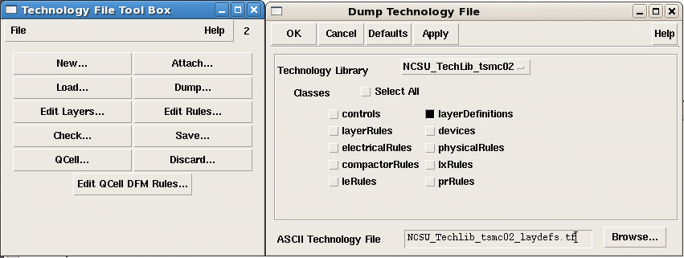

Then locate the current "display.drf" file in the virtuoso run directory. It coIf not found then please take a look at the technology directory, which should contain the original version of the display.drf file. The display.drf file contains color and layer visibility and style defintions, fill pattern and line style information. As third item we need a copy of the OpenAccess stream layer map file. It should reside in the technology library and is usually called "streamin.layermap". It will contain a mapping between OA layer/OA purpose to GDSII layer number and GDSII datatype. Here is an exmaple:
# ------------- --------------------- ----------- # Layer Name Layer purpose GDSII layer # ------------- --------------------- ----------- nwell drawing 41 0 nwell drawing 42 0 active drawing 43 0 nactive drawing 103 0 pactive drawing 113 0 tactive drawing 60 0 poly drawing 46 0 sblock drawing 29 0 nselect drawing 45 0 pselect drawing 44 0 cc drawing 25 0 cp drawing 47 0 ca drawing 48 0 metal1 drawing 49 0 metal1 pin 81 0 metal1 boundary 49 5 via drawing 50 0 via boundary 50 5 metal2 drawing 51 0 metal2 pin 82 0 metal2 boundary 51 0 ... prBoundary drawing 100 0 instance drawing 101
Then please move your_tech.tf, display.drf and streamin.layermap into your destination folder.